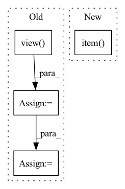

Pattern ID :7206
Before Change
for r in valid_relations: // set a threshold for each relation
current_rel = valid_spo_all[:, 1] == r
true_labels = y_valid[current_rel].view( -1)
predictions = (
X_valid[current_rel].view(-1, 1) >= X_valid[current_rel].view(1, -1)
).t()
accuracies = (predictions == true_labels).float().sum(dim=1)
accuracies_max = accuracies.max()
rel_threshold = X_valid[current_rel][accuracies_max == accuracies].min()
rel_thresholds[r.item()] = rel_threshold
predictions = X_valid[current_rel] >= rel_threshold
y_pred_valid[current_rel] = predictions.view(-1).long()
for r in test_relations: // get predictions based on validation thresholdsAfter Change
thresholds[REL_KEY] = get_threshold(X_valid, y_valid)
for r in test_relations: // get predictions based on validation thresholds
key = r.item() if r.item() in thresholds else REL_KEY
threshold = thresholds[key]
current_rel = test_spo_all[:, 1] == rIn pattern: SUPERPATTERN
Frequency: 3
Non-data size: 4
Instances Fragment ID: 24190385
Project Name: tsafavi/codex
Commit Name: c95e36e54a106a4920017ba8aeb86d8841170921
Time: 2020-07-23
Author: tsafavi@umich.edu
File Name: scripts/tc.py
M Class Name: AnonimousClass
N Class Name: AnonimousClass
M Method Name: main(0)
N Method Name: main(0)
M Parent Class:
N Parent Class:
M File Name: scripts/tc.py
N File Name: scripts/tc.py
M Start Line: 170
M End Line: 232
N Start Line: 200
N End Line: 235
Before Change
print(" - F1 Score: ", f1)
print(" - Accuracy: ", acc)
else:
test_preds = results.view( -1, 2) .cpu().detach().numpy()
test_truth = truths.view(-1).cpu().detach().numpy()
print(f"{emos[single]}: ")
test_preds_i = np.argmax(test_preds, axis=1)
test_truth_i = test_truth
f1 = f1_score(test_truth_i, test_preds_i, average="weighted")
acc = accuracy_score(test_truth_i, test_preds_i)
print(" - F1 Score: ", f1)
print(" - Accuracy: ", acc)After Change
for emo_ind in range(4):
preds_i = np.argmax(preds[:, emo_ind], axis=-1)
truths_i = truths[:, emo_ind]
acc.append(torch.sum(truths_i == preds_i).item() / len(preds))
f1.append(f1_score(truths_i, preds_i, average="weighted"))
else:
preds = np.argmax(preds, axis=-1) Fragment ID: 24190371
Project Name: wenliangdai/modality-transferable-mer
Commit Name: 67ce6293aea9ea344c51585fe2594faf8bc586fd
Time: 2020-06-09
Author: wenliang.dai.1995@gmail.com
File Name: src/evaluate.py
M Class Name: AnonimousClass
N Class Name: AnonimousClass
M Method Name: eval_iemocap(3)
N Method Name: eval_iemocap(3)
M Parent Class:
N Parent Class:
M File Name: src/evaluate.py
N File Name: src/evaluate.py
M Start Line: 47
M End Line: 70
N Start Line: 146
N End Line: 159
Before Change
loss = self.criterion(estimated_sources_amplitude, sources, batch_mean=False)
loss = loss.view( batch_size, n_sources)
loss = loss.mean()
valid_loss += loss.item()
estimated_sources_amplitude = estimated_sources_amplitude.view(batch_size, n_sources, n_mics, n_bins, n_frames)
mixture = mixture.permute(1, 2, 3, 0, 4) // (1, n_mics, n_bins, batch_size, n_frames)After Change
loss = self.criterion(estimated_sources_amplitude, sources, batch_mean=False)
if self.combination:
valid_loss += loss.mean(dim=0).item()
else:
valid_loss += loss.mean(dim=0).detach() // (n_sources,)
batch_size, n_sources, n_mics, n_bins, n_frames = estimated_sources_amplitude.size() Fragment ID: 24190341
Project Name: tky823/dnn-based_source_separation
Commit Name: 84cad5184ccab316e3675dc3f6c07c11e5d09277
Time: 2021-10-29
Author: delta9guitar97@gmail.com
File Name: egs/musdb18/x-umx/src/adhoc_driver.py
M Class Name: AdhocSchedulerTrainer
N Class Name: AdhocSchedulerTrainer
M Method Name: run_one_epoch_eval(2)
N Method Name: run_one_epoch_eval(2)
M Parent Class: TrainerBase
N Parent Class: TrainerBase
M File Name: egs/musdb18/x-umx/src/adhoc_driver.py
N File Name: egs/musdb18/x-umx/src/adhoc_driver.py
M Start Line: 163
M End Line: 189
N Start Line: 195
N End Line: 220